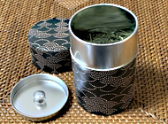
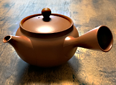
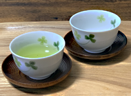
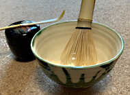

お茶と茶器
日本茶の茶器は、お茶の種類によってそれぞれふさわしい道具があります。
茶筒（ちゃづつ）

お茶は乾燥品なので、湿気は大敵です。お茶には吸水性があるので、保存が悪いと水分の含有量が増え味が落ちます。機密性のある茶筒で保管しましょう。
急須（きゅうす）

どのお茶の急須でも水切れのよいものが基本です。少量でいただくなら小さな急須、たっぷりといただく番茶などには大きめの厚手の陶器が向いています。
茶碗（ちゃわん）、茶托（ちゃたく）

低温でいれる玉露には薄手の磁器、熱湯で入れる番茶などは厚手の陶器が向いているといえます。茶托は本来、熱に弱い卓をお茶の熱から守るためから使われたといわれていますが、茶托にのせることで上品なお茶になるから不思議です。
抹茶（まっちゃ）道具

本来の茶道の点前には、細やかな作法、色々な道具がありますが、日常おいしくいただくには抹茶茶碗（まっちゃちゃわん）と茶筅（ちゃせん）があればはじめられます。茶杓（ちゃしゃく）は、粉である抹茶を量りやすく、いつも同じ味でたのしむために便利です。